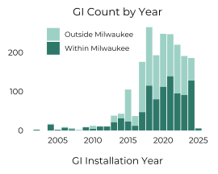
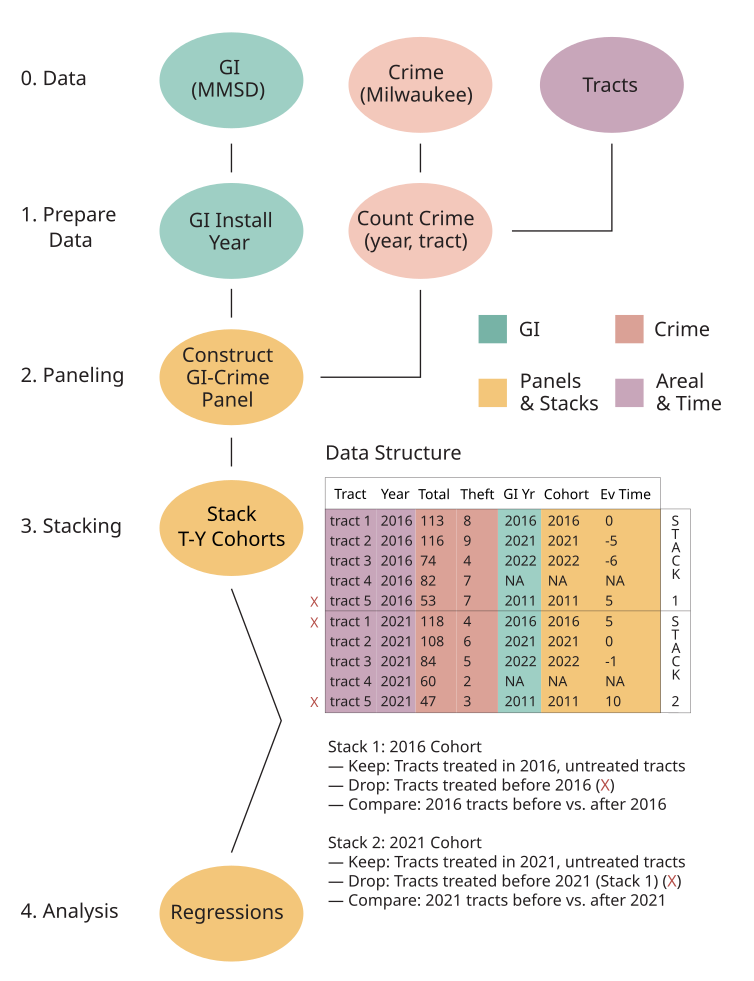

Modeling Green Infrastructure Co-Benefits
MMSD: A Green Pioneer
As a major city of the Great Lakes region, and sitting at the confluence of three major rivers, flooding has long threatened Milwaukee, Wisconsin. Following major floods in 1997 and 1998, the Milwaukee Metropolitan Sewerage District (MMSD) began vigorously expanding its use of green infrastructure (GI) across the Milwaukee metro area. Through trees, bioswales, green roofs, and other forms of GI, this strategy aims to mitigate urban flooding by increasing low-cost storage capacity. GI holds water where it falls, thus reducing stress on the sewer network during storms.

Definition: Green Infrastructure
“… an approach to wet weather management that is cost effective, sustainable, and environmentally friendly. Green infrastructure management approaches and technologies infiltrate, evapotranspire, capture, and reuse stormwater to maintain or restore natural hydrology.”
— US EPA, 2010, p. 31
Co-Benefits
Proponents of GI commonly tout its claimed co-benefit effects — the positive, ancillary impacts of these technologies beyond their core function in wet weather management. The MMSD has long argued for GI on the basis of co-benefits, such as increasing nearby property values, air and water quality improvements, reducing urban heat island effects, and reducing crime in the surrounding area.
Reduced incidence of crime around GI may occur for many reasons. Evidence and theory suggests that planted greenery may indicate maintenance, leading to greater surveilance of criminal activity in an area. Moreover, studies have shown that planted greenery reduces physiological and mental markers of stress, which could reduce the incidence of crime. Alternatively, GI has increasingly been linked to “green gentrification”, which suggests that the socioeconomic conditions of greened neighborhoods may change, leading to fewer drivers of crime.
Research
My research centered on the evaluation of claimed reductions to the incidence of crime, asking three questions:
Q1) Is there a relationship between the MMSD’s construction of GI and changes in neighborhood-level criminal activity in the City of Milwaukee, Wisconsin?
Q2) If GI is associated with lower crime, are its effects sustained or temporary?
Q3) What kinds of crime are most impacted — if any — by the installation of GI? Are effects uniform, or do they vary based on the offense?
Methods
My research relied on a staggered difference-in-differences (DiD) design – also known as an event study or stacked DiD — in order to examine the effect of green infrastructure on crime. The MMSD installed GI in different places at different times, and this staggered deployment challenges a traditional DiD research method that asks: “What effect followed from an intervention, relative to what came before it?”
By constructing a panel dataset with treatment year cohorts, as shown in the flowchart below, my research controlled for the year that GI was installed in a location. This allowed me to compare like with like when assessing the incidence of crime; criminality in a newly-treated census tract shouldn’t be compared to criminality in a tract that was treated two years prior. Rather, tracts are only compared to those which are also being newly treated with GI or those which have not yet received GI. This allows a reliable, controlled assessment of what effect GI actually had on neighborhood crime.
With this data in hand, I used fixed effects Poisson regressions to assess the relationship between GI installation and local incidence of crime.

Findings
My work did find evidence that the incidence of specific crimes falls following the installation of GI, but with a few caveats.
First, some crimes become less likely, though not all are impacted. Opportunistic and property-based crimes — vehicle break-ins, vehicle thefts, larceny, and burglary — fall modestly in an area following GI installation. Additionally, violent assaults seem to fall around newly-installed GI, which may include both premeditated violence and spur-of-the-moment assaults. Conversely, other violent crimes — homicide, sex offenses, and robbery — are unimpacted by GI.
Second, some effects last longer than others. Opportunistic crimes show the most promising reductions, with evidence that the co-benefit effect is sustained for at least 2-3 years post-installation. Assessing property crimes alone reveals a more narrow effect window, with crime falling in the installation year, followed by a rebound to normal conditions.
Third, reductions to crime are modest (3-7% annually), though the cumulative effect of these interventions is meaningful over time. There is no silver bullet that can stop crime from occurring, but the effect of many interventions can help communities thrive.
This evidence suggests that the MMSD’s GI policy does offer claimed co-benefit effects, providing social benefits to Milwaukee communities.
Please see my Portfolio for further details.